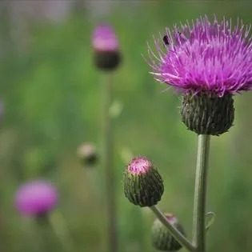
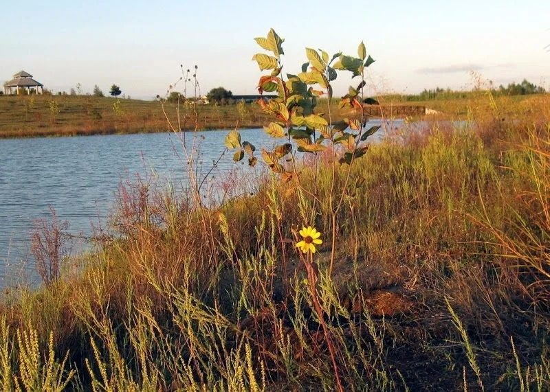

Come see a flower that grows almost nowhere else on Earth.
The preserve shelters three species hanging on at the edge of survival, including a federally endangered wildflower you can see in only a handful of places in the world. Mima mounds, the low rises that ripple across the prairie, create the bare, sandy soils these rare plants depend on.

Texas Prairie Dawn
A tiny annual wildflower with small yellow blooms, listed as endangered since 1986 and discovered here during the original survey. It grows just inches tall in the sparse soils between mima mounds.

Houston Camphor Daisy
A threatened plant with bright yellow flowers and a camphor scent. Fewer than twenty populations remain in its native range across Harris and Galveston Counties.

Texas Windmill Grass
A threatened grass that grows at the base of the mima mounds, part of the delicate web of native plants the preserve was created to protect.